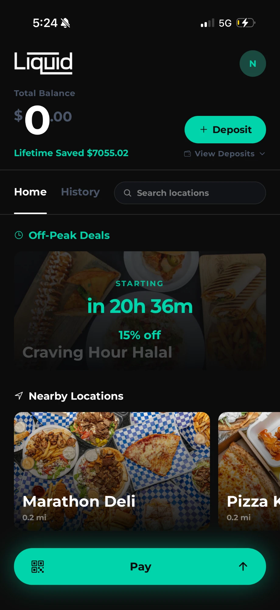
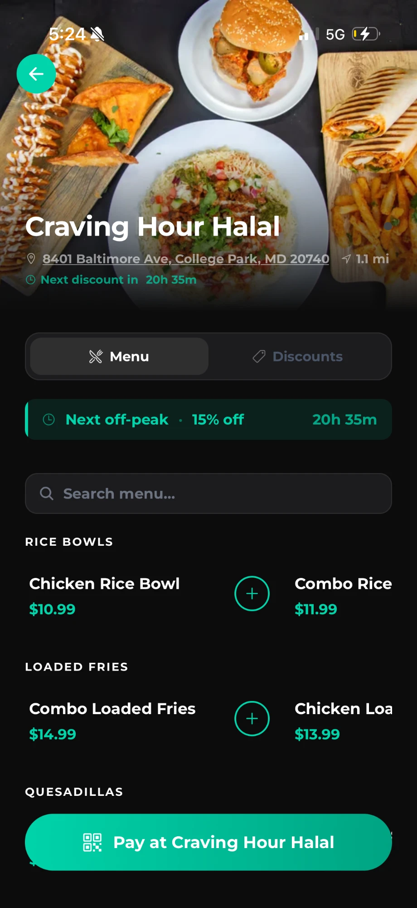
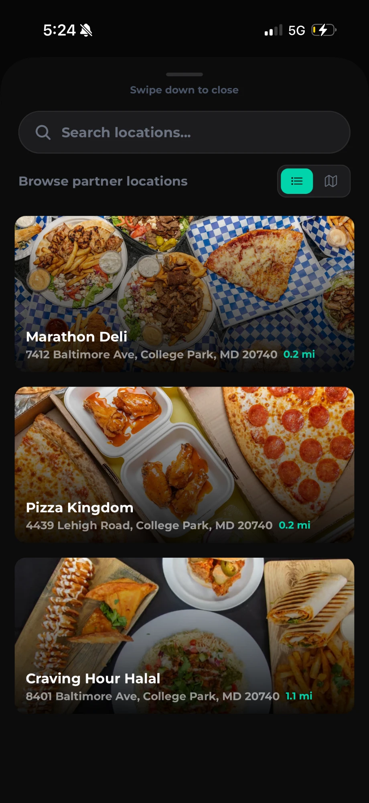
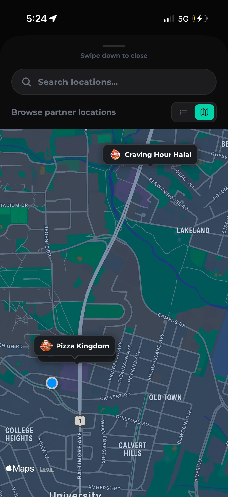
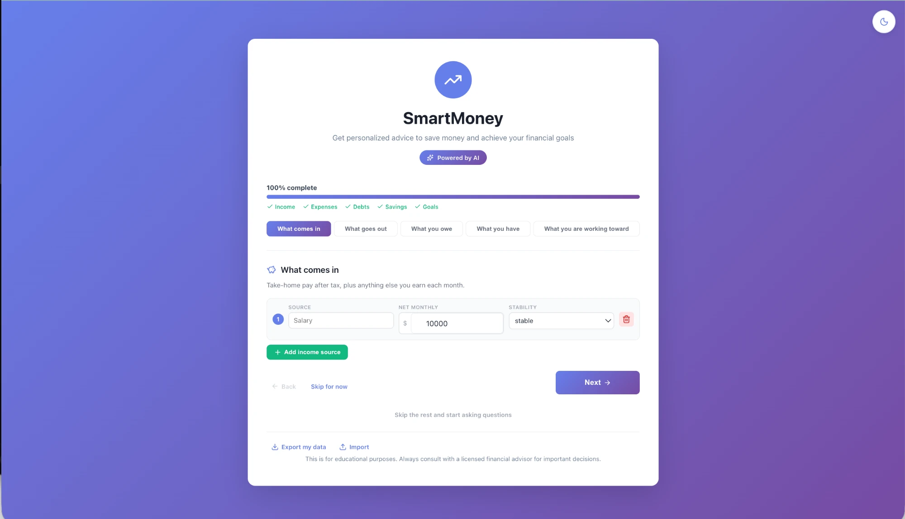
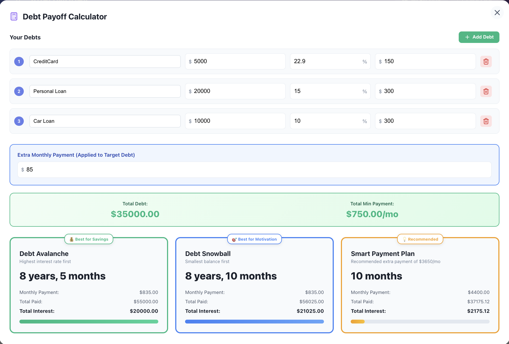
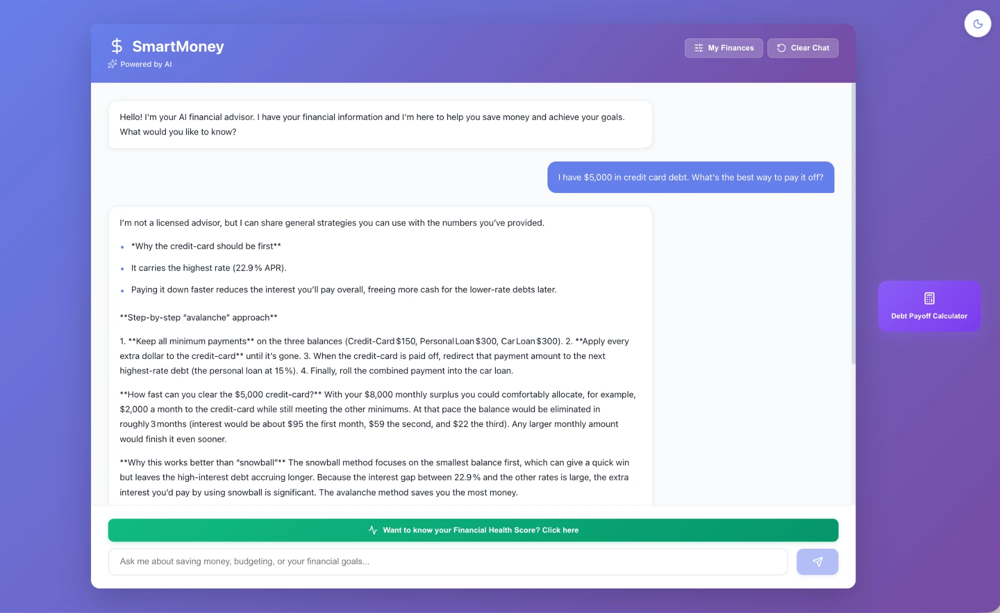
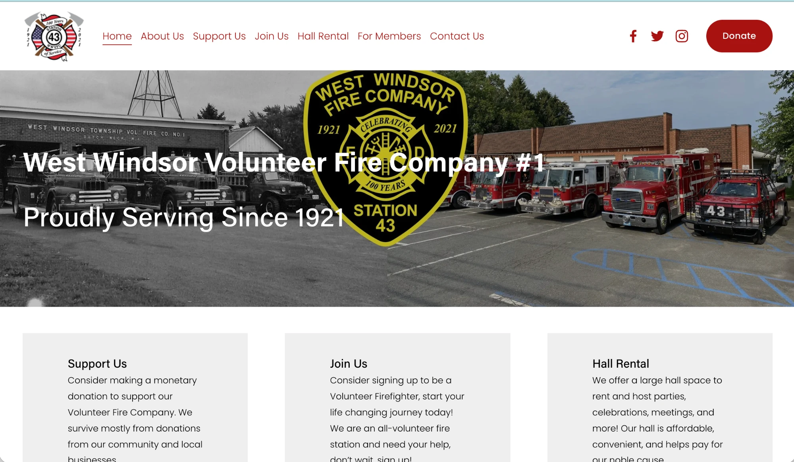
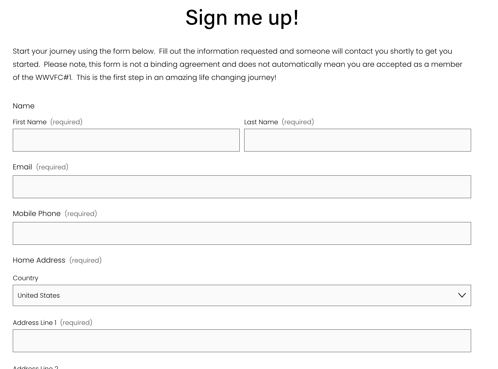

I build for the people and problems larger companies overlook.
Computer Science at Maryland. I've shipped four full-stack applications. One of them is taking payments from restaurants on Route 1 right now, and three more behind it that aren't.
4 applications built end to end /
1 taking live payments /
3 partner restaurants /
500+ offices cold-called /
+50% recruiting lift at my fire station /
140+ volunteer hours /
ICS 100 & 700 certified
What I've built, and what each one broke teaching me
A campus wallet taking payments today, an AI financial advisor, a redesign for my fire station, and a stretch running sales at a healthcare startup.
Liquid
A mobile wallet for College Park
Co-founded with Pranav Puranik · live, taking payments
React Native / Stripe Connect / Maryland LLC
Students load money into a campus wallet and get a discount at partner restaurants they could never get paying with a card, because we can offer merchants economics the card networks can't.

img/liquid-wallet.webp
The wallet: balance, the day’s deal, partners nearby.

img/liquid-merchant.webp
A partner’s page, discount counting down, pay button below.

img/liquid-partners.webp
The three live partners and their distance from campus.

img/liquid-map.webp
The same three, around campus.
Restaurants near campus lose two to three percent of every transaction to interchange, and have almost no direct channel to students. Liquid gives them a cheaper rail and access to exactly the customers they want.
The deposit mechanic is what makes the discount real rather than promotional. A restaurant's biggest objection to discounting is uncertainty: they're cutting margin on the hope that volume follows. When a student has already loaded money into the ecosystem, the restaurant isn't discounting on hope. It's discounting against spend that has already been committed. That's why partners sign.
Why a restaurant signs: it is not cutting margin on hope, it is cutting it against spend already sitting in the wallet.
You give it your income, expenses and goals. It gives back a personalized budget and an optimal debt-payoff plan, computed from your actual numbers rather than pulled from a template.

img/smartmoney-onboarding.webp
Setup asks in plain words: what comes in, what goes out, what you owe.

img/smartmoney-calculator.png
Three strategies costed against the same debts: avalanche, snowball, and what the extra payment buys you.The model never computes a figure. It calls the library and reports what comes back, which is why the chat and the interface can't contradict each other.

img/smartmoney-chat.webp
The same figures, phrased. It cites the 22.9% card because the library told it that is the expensive one.
Financial advice is either generic to the point of being useless, or expensive enough that the people who need it most can't afford it. SmartMoney was my attempt at the third option.
The important architectural decision was that the model does not do arithmetic. I wrote the financial library myself, covering avalanche and snowball amortization, a health score and goal-feasibility projections, and the model reaches those functions through a tool-calling interface. The advice in the chat and the numbers in the interface come from the same tested code, so they cannot disagree with each other.
What I learned. The hardest problem wasn't engineering, it was making the output feel human. Early versions were technically correct and tone-deaf, telling a student with $800 a month in income to "reduce discretionary spending," acknowledging nothing about their actual life. The quality of an AI output is almost entirely determined by the quality of what you hand it, and that changed how I approach AI products generally.
The failure I overcame. I built the frontend and backend in parallel instead of designing the API contract first, and paid for it in integration friction I had personally created. I also underestimated how much edge-case handling financial data demands, because people's finances don't fit neatly into forms.
The sharpest failure came later. In live testing, the advisor produced a savings projection that was simply invented. Tracing it took longer than building the feature, and the cause turned out to be three unrelated bugs stacked on top of each other: an incomplete prompt constraint, a tool schema that instructed the model to omit a required parameter, and internal tool names leaking into user-facing text. I verified each fix against the live API rather than against mocks, since mocks would have cheerfully confirmed the broken behavior. That's why the safety constraints are now enforced by tests that fail the build if a guardrail is removed, instead of by a prompt I hope holds.
Station 43
A recruitment site rewritten from the recruit's point of view
Shipped · +50% applications, 20+ new volunteers
HTML / CSS / Adobe Suite / UX writing
Our volunteer recruitment website was written for us, not for the person considering applying. I rebuilt it around them, and applications rose 50%.

img/station43-home.webp
The rebuilt home page. A hundred years of the company, and one obvious way in.

img/station43-signup.png
The application itself: name, contact, address, and little else in the way.
It assumed familiarity, buried the information that mattered, and put friction in front of someone applying for the first time. I redesigned it end to end: restructured the layout, rewrote the messaging from the prospective volunteer's perspective, and stripped every unnecessary step out of the application itself. We brought in more than 20 new volunteers.
I'm a volunteer firefighter there, so I had the unusual advantage of being both the person who built the site and the person who has to work alongside whoever it recruits.
This taught me more about product thinking than anything I've built since. Most sites fail not because the design is bad, but because they are written from the organization's point of view instead of the reader's. Ours was, and I had read it a hundred times without noticing.
ReturnFlow
Automating the worst part of buying things online
Shipped · React Native, Flask, SQLAlchemy
A mobile-first platform that runs an e-commerce return from the moment a customer starts it to the moment it's resolved, replacing a process most retailers still handle over email. I built the React Native frontend, designed the REST API in Flask, and architected the database.
The failure I overcame. I designed the schema around the simple case, and real-world data never is the simple case. Partial returns, split orders and status reversals all broke the model, and I refactored the schema completely mid-project. It cost me a week, and it permanently changed how I work: I now treat the schema as the most important design decision in any project, and the one I am least willing to rush.
Klio Care
Learning to be told no, on someone else's payroll
Not code · ran the sales function
At a healthcare startup building home-health referral and order-signing workflows, I ran sales without a formal title: provider lead lists, pitch materials, outreach scripts, and field work across New Jersey, San Antonio and El Paso.
I contacted more than 500 doctors' offices and onboarded roughly 40. The conversion rate is the lesson. Most of the job is hearing no, adjusting the script, and going again, and I would much rather have learned that on someone else's payroll than on my own company's.
Built with intention, technology doesn't just automate a process. It reshapes how people connect with institutions, and with each other.
Part two
“What are you working on?”
Getting Liquid the rest of the way, a licensing fight in New York, and two ideas behind them.
Liquid, the business
The half of it that isn't code
In progress · licensing, settlement, distribution
The app works. Most of what is left to build at Liquid is not software: it is the licensing question, the settlement timing, and getting signatures on paper.
The hard part is not the app. Holding other people's money is a regulated activity. I had to work out whether our stored-value balances make us a money transmitter under Maryland law, which would require licensing we cannot realistically obtain as students, and I took that question directly to the Maryland Office of Financial Regulation rather than guessing. The answer shaped the product: how balances are held, how funds settle, and what we are legally permitted to call the thing.
The payment flow runs on Stripe Connect using separate charges and transfers, which means understanding a T+2 settlement window and what it does to a restaurant's cash flow before promising anything in a sales meeting. I also had to navigate Apple's App Store rules on payments, where the exemption we rely on is narrow enough that getting it wrong means getting pulled.
The failure worth naming. Early on I counted verbal commitments from owners as signed partners, and built a launch timeline on top of them. An enthusiastic yes in a conversation is worth close to nothing until there is a signed merchant agreement and a configured terminal. We rebuilt the pipeline so that signatures and live transactions are the only milestones that count.
Next is student-to-student transfers and delivery, so the wallet becomes the default way money moves on campus rather than a discount card.
Ride Rite
Zero-commission ride-hailing for New York's yellow taxis
In progress · app built, pursuing the E-Hail license
Instead of taking 25 to 30% of every fare the way Uber and Lyft do, drivers pay a flat monthly subscription and keep the entire fare.
The licence is not paperwork around the product. It is the only thing standing between the app and a car, which is what makes it the product.
It's aimed at NYC medallion taxi drivers, who watched their passenger volume move to apps they were largely locked out of. The idea came from Namma Yatri, an Indian platform built on exactly that model. The question was whether it could work in a city that regulates taxis heavily, so most of my work has gone into the regulation rather than the app.
I'm pursuing the Taxi and Limousine Commission's E-Hail licence first, and I plan to distribute through the NYC Taxi Workers Alliance rather than recruiting drivers one at a time. I chose not to implement surge pricing, because the entire pitch is predictability, and designed a two-part fare that sets a floor under driver pay and prices the rider below a predicted Uber fare. Then I built the app in Expo and React Native with Supabase and Stripe, having never written a mobile app before.
What I learned. I assumed the app was the hard part. It isn't. A competitor, Empower, built a working zero-commission product and ran it in New York without the license, and that exposure is why it is not a competitor today. The permission to dispatch is the product.
The smaller failure. I turned on Supabase row-level security and wrote no policies, so reads and writes failed silently and nothing ever raised an error. It ran, and it didn't work, and those are not the same thing.
Feedback routing
Catching the complaint before it becomes a one-star review
Concept · B2B SaaS for restaurants
The unhappy customer still gets the Google link, but only after somebody has already answered them.
Reviews on Google Maps almost never represent the average customer. Unhappy people are motivated to write and happy ones forget, so independent restaurants are held hostage by a mechanism they don't control.
A customer finishes their meal and leaves. A few minutes later they get a text asking them to rate it one to ten. Seven or above, they're thanked and sent a Google review link while the meal is still fresh. Below seven, they're asked what went wrong and given the manager's contact. The Google link goes out either way, as Google's policy requires, but someone who has already been heard is less likely to publish a damaging one. 51% of negative reviews cite service, which is the part a manager can fix.
What I don't know is whether a manager who gets that text at nine on a Friday night does anything with it. If they don't, this is a politer way to bury a complaint rather than a way to answer one, and I can't think of a way to find out short of building it.
SmartMoney, expanded
From typed-in numbers to bank data
Next build · consumer fintech
The prototype runs on numbers people type in, and almost nobody knows what they spend in a month. Connecting through Plaid grounds it in what someone spent rather than what they remember spending, which is the difference between a calculator and an advisor.
The long-term version is a co-pilot for people with no investments to manage: someone getting out of debt, building an emergency fund, or making rent on a first apartment. That market is enormous and almost entirely unserved for anyone who can't afford an advisor. Next step is the Plaid integration.
Why Startup Shell
I've built most of this alone. SmartMoney, Ride Rite and the Station 43 site were solo from start to finish. Liquid is the first time I've had a co-founder, and the difference in how fast we move is the clearest argument I have for not working alone again.
What I want from Startup Shell is the part I can't build by myself: people who have already taken a product through the kind of regulatory questions I'm sitting in front of right now, somewhere to work that isn't my dorm room, and the specific kind of feedback you only get from other people who are shipping. The kind that tells you the deposit mechanic doesn't make sense before a restaurant owner does.
I'd also like to be useful in return. I can help anyone stuck on payments, Stripe Connect, or the question of whether what they're building makes them a money transmitter, because I've had to answer all three for Liquid.